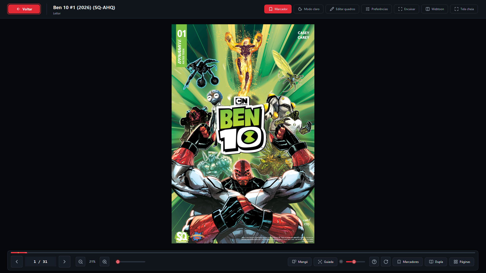

YOUR COLLECTION TAKES CENTER STAGE
A library
you’ll love opening.
Covers, search, favorites, and progress. Find that issue and pick up exactly where you left off.
A NEW CHAPTER · Komicove 0.2.1.1
Organize your collection, pick up where you left off, and enjoy a reading experience made for people who love comics.
Local reading. No account needed.
Windows 0.2.1.1 · Android 0.2.1.1 · Linux 0.2.1.1


ReaderActual Komicove screenshots. App screenshots retain their original language.
01 / MADE FOR READING
From the first issue to the latest chapter, everything that matters is within reach.
YOUR COLLECTION TAKES CENTER STAGE
Covers, search, favorites, and progress. Find that issue and pick up exactly where you left off.
Collections to organize your comics and keep your next reads close at hand.
Zoom, thumbnails, and bookmarks to explore every panel without losing your place.
Double-page spreads, manga mode, and vertical reading. Choose how the story unfolds.
Themes and customization to make your reading space more comfortable.
Export and restore your reading data with built-in backups.
KOMICOVE 0.2.1.1 · WINDOWS · LINUX · ANDROID
Version 0.2.1.1 adds system or Komicove brightness control while keeping PC/Android sync, improved panel detection, and your existing reading data.
Improved panel detection, smoother focus and zoom, and manual adjustments when needed. Automatic detection remains experimental.
Progress and favorites sync automatically while the apps are open. Sign in with the same account and keep the comic on both devices; files are not transferred.
Redeem a Contributor token in your profile and read update messages from the team inside the app, with release notes and a download button.
02 / INSIDE KOMICOVE
Library, reader, and collections: three spaces for your next great read.
Actual Komicove screenshots. App screenshots retain their original language.
03 / BEYOND YOUR BOOKSHELF
Discover works, share authorized creations, and track your submissions without leaving the app.
Meet the project ↗Explore the catalog and submit your own or authorized works for review.
View your submissions and track downloads in one place.
Manage your account and keep up with notifications.
04 / OPEN YOUR COLLECTION
Windows and portable Linux use a compatible external tool for some formats. Android and the complete Flatpak include extraction support. Password-protected files are not supported.
Native support.
READY TO READComics with one image per page, with experimental support.
EXPERIMENTALSupport included in the reader package.
INCLUDEDOn Windows and portable Linux, these require a compatible tool such as 7-Zip.
EXTERNAL TOOLWindows and portable Linux may need 7-Zip. The complete Flatpak includes it.
7-ZIP REQUIREDINDEPENDENT BY NATURE
Komicove is an independent, open-source project. Found a bug, have an idea, or want to contribute? You can be part of the next chapter.
05 / BEFORE THE FIRST PAGE
Not when using the Windows installer, Linux packages, or Android APK.
Not for local reading. You can use guest mode to open and organize your own files.
Reading local files works without a server. Community and synchronization need internet access and use the Komicove server, already configured in the app.
On Windows and portable Linux, some formats require a compatible tool such as 7-Zip. Android needs no separate installation, and the complete 0.2.1.1 Flatpak includes 7-Zip.
Use GitHub Issues. Include your version, steps to reproduce the issue, and a screenshot if possible. Never share passwords or tokens.
06 / START YOUR NEXT CHAPTER
Version 0.2.1.1 is available for desktop and mobile. Choose your platform to view the official packages and release notes.
Windows installer · No Python required
View Release 0.2.1.1Portable .tar.gz or Flatpak · x86_64
View Release 0.2.1.1 See installation detailsAndroid 8+ · Universal APK
View Release 0.2.1.1 See installation detailsLINUX 0.2.1.1 · X86_64
Choose the portable .tar.gz (glibc 2.41 or newer) or the experimental Flatpak (Freedesktop 25.08 runtime). Both 0.2.1.1 packages are x86_64 and include the local guided-reading detector.
Validated for this release on:
Available in the 0.2.1.1 Release: Komicove-Linux-0.2.1.1-x86_64.tar.gz and Komicove-Linux-0.2.1.1-x86_64.flatpak.
Explore Linux downloads ↓ANDROID 0.2.1.1 · ANDROID 8+
Your library and local reading on your phone, with improved guided reading and PC sync. The universal APK supports ARM64, 32-bit ARM, x86, and x86_64.
Release file: Komicove-Android-0.2.1.1.apk: universal package available in the official Release.
Explore Android downloads ↓KOMICOVE 0.2.1.1 · WINDOWS · LINUX · ANDROID